Как читать авторский курс и нормативные материалы
Это учебные материалы, а не заключение о соответствии конкретного продукта. Организационные модели курса отделяйте от терминов стандарта: ППК в опубликованном проекте — машиночитаемый перечень, а живой реестр его версий является практикой сопровождения. Термин OSA в разных материалах имеет разный охват. Статус и обязательность нормативного документа проверяются отдельно; проект КАПО опубликован как проект первой редакции.
Конспект: C и C++ legacy без дисциплины пакетного менеджера
Зачем модуль
В управляемых экосистемах состав ПО декларирован lock-файлом, и SBOM почти полностью восстанавливается из манифеста. В C/C++ без Conan или vcpkg такого манифеста нет. Зависимость может прийти из системного apt-пакета, из ручного каталога third_party/, из внутреннего форка с патчами или быть статически вшита в бинарь. Поэтому генератор SBOM, запущенный по исходникам, видит подозрительно мало компонентов — и тишина в отчёте читается как «зависимостей нет», хотя на деле они есть, просто не задекларированы. Модуль учит восстанавливать состав там, где сборка не отдаёт метаданных, и честно фиксировать слепые зоны.
Census III о C/C++ Census III (Linux Foundation) отмечает, что C и C++, в отличие почти от всех других языков, не предотвращают нарушения memory safety — корневую причину самого распространённого класса уязвимостей. И отдельно: отсутствие единой схемы именования компонентов (CPE/PURL) заметно тормозит анализ. Для C/C++ это бьёт дважды: высокий риск компонента и слабая идентичность.
Ключевые идеи
#include≠ зависимость. Заголовок<openssl/ssl.h>виден компилятору, но не задаёт ни версию, ни факт линковки. Версию даёт только сборка и бинарь.- Три слоя состава. Исходная зависимость → динамическая линковка (
.so) → статическая линковка (.a). Динамику видно: записьDT_NEEDEDв ELF-секции.dynamic. Статику не видно: кодlibfoo.aкопируется в исполняемый файл и теряет границу — компонент исчезает из SBOM. - Маппинг ELF → DEB даёт координаты.
ldd/readelf -dдают имя.so;dpkg -S/aptпревращают путь в пакет с версией и дистрибутивом — а значит, в PURL видаpkg:deb/debian/libssl3@3.0.11. - Полнота — на этапе сборки. Поздний скан готового (особенно stripped) бинаря теряет статически слинкованное и vendored. Надёжнее build-scan: перехват вызовов компилятора и линкера во время
make/cmake. - Conan/vcpkg, когда есть.
conan graph infoотдаёт граф и идентичность пакета — устойчивый PURL вместоpkg:generic/....
Как выглядит на практике
Динамическую библиотеку видно в ELF и можно смаппить на пакет:
$ readelf -d ./app | grep NEEDED
0x0001 (NEEDED) Shared library: [libssl.so.3]
0x0001 (NEEDED) Shared library: [libcrypto.so.3]
$ dpkg -S $(ldconfig -p | awk '/libssl.so.3/{print $NF; exit}')
libssl3:amd64: /usr/lib/x86_64-linux-gnu/libssl.so.3
Так libssl.so.3 получает координату pkg:deb/debian/libssl3@<версия>. А если тот же OpenSSL слинкован статически (-l:libssl.a), в readelf -d его нет вовсе — остаётся искать символы (readelf -s, strings) и поднимать build-log.

Здесь работает «генератор фактов» (enrichment-утилита): на вход — сырой CycloneDX от cdxgen плюс ELF-бинарники; он добавляет результат бинарного анализа ELF и маппинг динамических библиотек на DEB через apt, дополняет метаданные из PyPI/npm/Conan/apt и отдаёт обогащённый bom.json. См. архитектурный кейс.
Слепые зоны именно C/C++
Что теряется - Статическая линковка (
.a) — компонент вшит, вDT_NEEDEDего нет. - Stripped binaries — вырезаны символы и debug-info, бинарный анализ слепнет. - Vendored /third_party/— копия исходников OSS без версии и истории. - Внутренний форк — выглядит как апстрим, но имеет свои патчи и другой профиль риска. -unresolvedбиблиотеки —.soне маппится ни на один установленный DEB-пакет.
Связь с нормативкой
ГОСТ Р 56939-2024 требует управляемости работ; NIST SP 800-218 SSDF (PS.3.2, PW.4, RV.1) задаёт связку «SBOM — сторонние компоненты — реакция на уязвимости»; BSI TR-03183-2 v2.1.0 — критерии качества SBOM; CERT C C++ и MISRA C C++ объясняют, почему риск C/C++ компонента высок. Шаблоны: Реестр unresolved libraries, Порядок работы с неопознанной библиотекой.
Что уносим в работу
- Почему «хороший» SBOM по C/C++ — это честный SBOM, и чем он отличается от плохого: Почему генерация SBOM — это искусство.
- Тишина в C/C++ SBOM — это не «зависимостей нет», а сигнал к проверке статики и vendored.
- Сначала
readelf -d+dpkg -Sдля динамики, потом отдельно ищем статически вшитое. - Полноту даёт build-scan, не поздний скан бинаря.
- Любую
.soбез DEB-координаты заносим в реестр unresolved libraries с ответственным. - Практики: П19. C C++ make build inventory, П20. CMake dependency graph, П21. Conan graph и package identity, П22. ELF dynamic dependencies, П23. Статическая линковка как слепая зона.